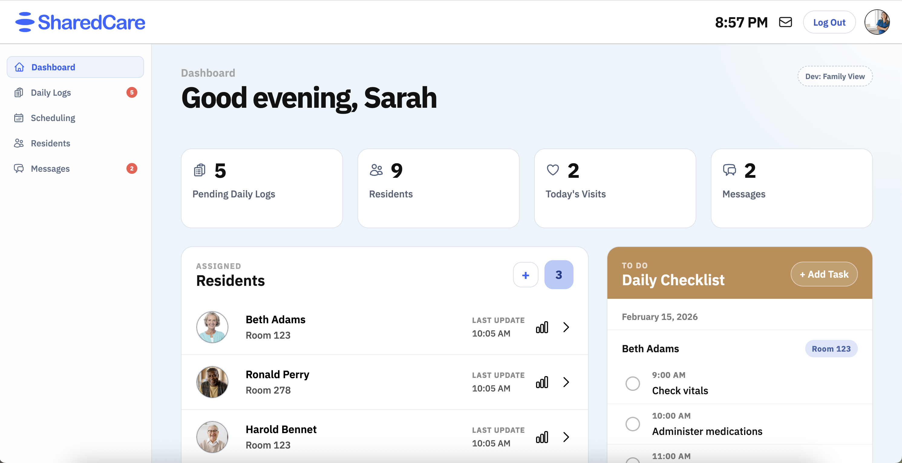

Elderly care is an often overlooked field, where fragmented communication and overworked staff leave families with limited visibility into resident wellbeing. SharedCare addresses this through an elderly care portal that improves transparency and family-facility communication.

Goals
- Reduce communication gaps between care staff and families
- Give caregivers a clear, low friction workflow
- Provide families real-time visibility into resident wellbeing
- Design for non technical users in stressful environments
Process
- Conducted interviews with caregivers and family members
- Mapped pain points in current communication workflows
- Built low-fi wireframes, iterated based on feedback
- Developed high-fi prototype with dual staff/family views
- Ran usability testing sessions and refined the interface
Key Takeaways
- Caregivers need quick glance interfaces, not dense dashboards
- Families value frequency of updates over depth of detail
- Trust is built through consistency, not just features
Next Steps
- Automate daily summary notifications for families
- Expand scheduling module with shift handoff notes
- Integrate with existing care management systems